Location Target
Dist.
Strategic reference for distance, regulations, and tactics (2025-26 Season)
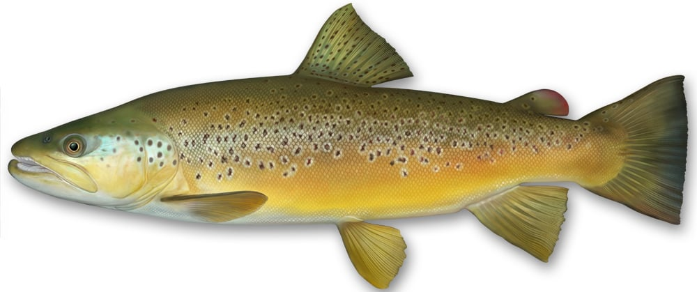
Salmo trutta
ID Markers: Golden-brown coloration, distinct dark spots often surrounded by lighter pale halos. No spots on the tail.
NC Habitat: Highly adaptable. Found in the Selwyn, lower Waimakariri, and most high-country lakes.
Suggested Lures: Parachute Adams, Rapala F7, Silver Toby, small bead-head nymphs.
Bite Profile: Aggressive, solid strikes on hardware; highly calculated, subtle sips on surface dries.
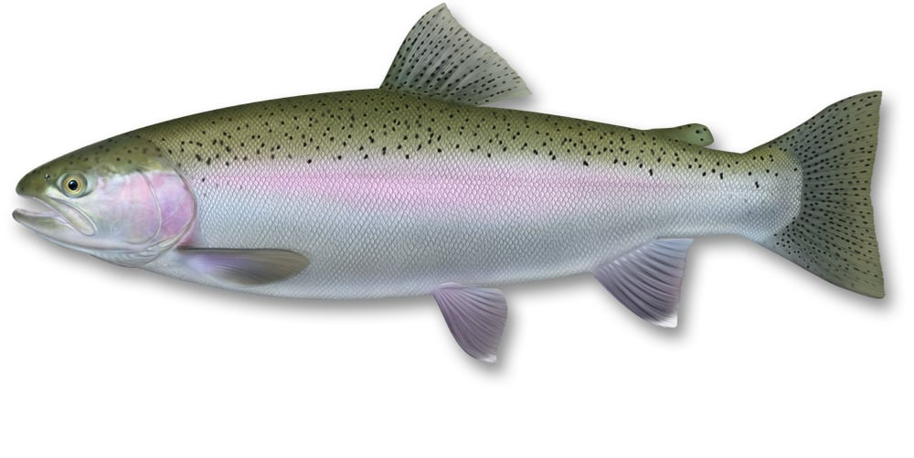
Oncorhynchus mykiss
ID Markers: Silvery body with a distinct pink/red lateral stripe. Heavy black spotting on the back and extending fully over the tail.
NC Habitat: High-country lakes (Lyndon, Coleridge). Prefers colder, highly oxygenated water.
Suggested Lures: Woolly Buggers, Glo-bugs, Mepps #2/#3 spinners, PowerBait (where permitted).
Bite Profile: Fast, erratic, high-velocity strikes. Frequently followed by immediate aerial leaps and erratic direction changes.
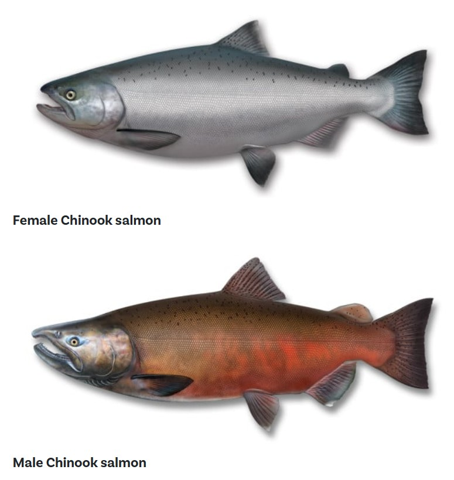
Oncorhynchus tshawytscha
ID Markers: Silver sides, black gums/mouth lining. Spots on the back and both lobes of the tail fin.
NC Habitat: Major braided rivers (Rakaia, Waimakariri, Hurunui) during spawning runs (Oct-Apr).
Suggested Lures: Heavy Zed spinners (12g-22g), Colorado spoons, bright weighted streamers.
Bite Profile: Territorial/reactionary strike (non-feeding mode in freshwater). Exhibits as a heavy, low-frequency dead weight or solid thump.
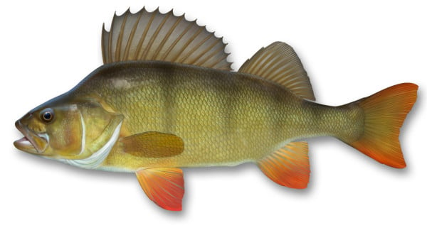
Perca fluviatilis
ID Markers: Olive green body with 5-6 dark vertical bars. Distinctive bright orange/red pelvic and anal fins. Two dorsal fins (first is spiky).
NC Habitat: Slow-moving rivers, wetlands, and lakes (e.g., Lake Forsyth, lower Selwyn).
Suggested Lures: Micro-jigs, 2-inch soft plastics (curltails), small red-bladed spinners.
Bite Profile: High-frequency, sharp taps. Schooling behavior means missed strikes are often instantly followed by secondary attacks.
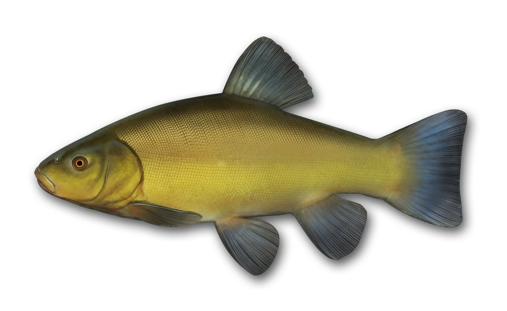
Tinca tinca
ID Markers: Olive-green to golden-brown, very tiny scales (slimy feel), rounded fins, and a small barbel at each corner of the mouth.
NC Habitat: Weed-choked, slow-moving waters and ponds. Active mainly at dawn/dusk.
Suggested Lures: Lures ineffective. Requires bait (sweetcorn, worms, maggots) on sensitive float rigs.
Bite Profile: Extremely cautious, low-velocity inspection. Registers as prolonged dipping or lateral sliding of the float before a sustained pull.
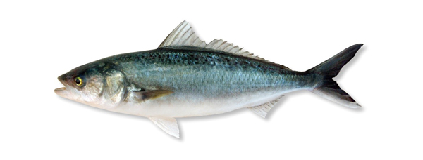
Arripis trutta
ID Markers: Torpedo-shaped, silvery body with blue/green mottled spots on the back. Yellowish pectoral fins.
NC Habitat: River mouths (Waimakariri mouth, Rakaia mouth). Often enters lower tidal reaches of rivers feeding on smelt.
Suggested Lures: Silver hex wobblers, 3-inch paddle-tail soft plastics, smelt-imitation flies.
Bite Profile: Violent, high-speed interception. Followed by sustained, high-torque runs and surface thrashing.
Standardized structural configurations for terminal tackle and line-to-line connections.
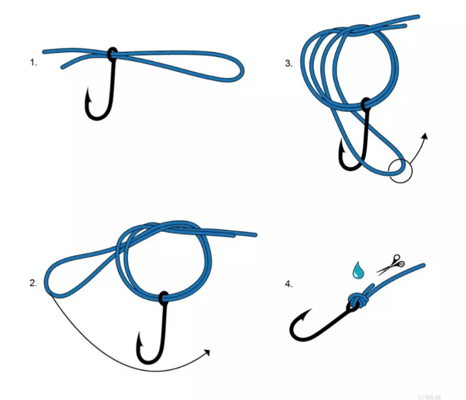
Exceptionally strong and easy to tie. Best for securing hooks, swivels, or lures to braided line or fluorocarbon.
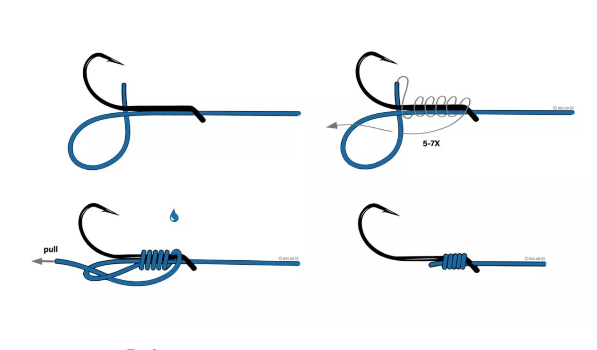
Ties the line directly to the shank of the hook. Provides a straight-line pull and better hook-up ratios for bait fishing.
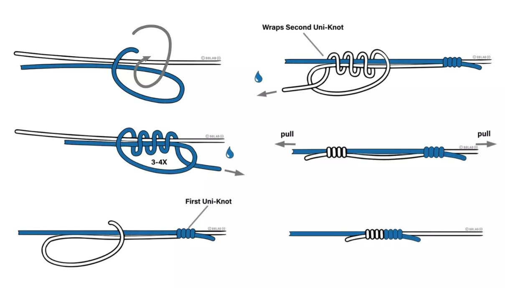
Highly reliable for joining two lines of differing diameters or materials (e.g., Braid main line to Fluorocarbon leader).
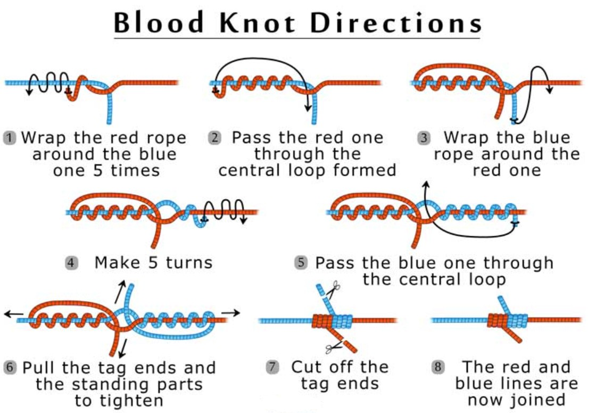
Best used for joining two lines of relatively equal diameter. Creates a very neat, low-profile connection perfect for fly fishing leaders.
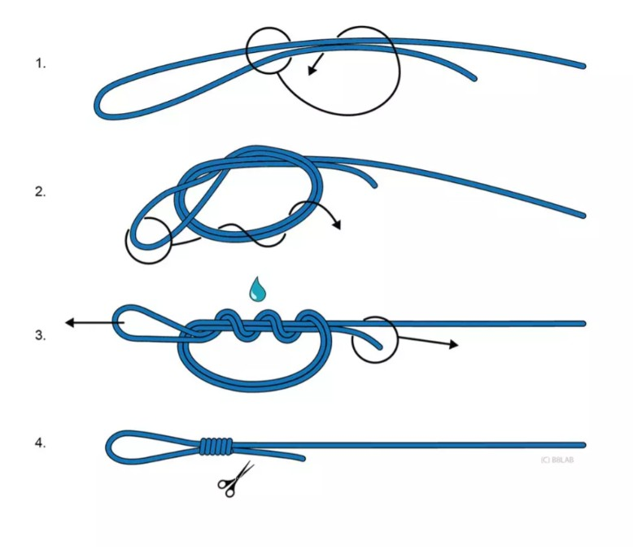
A fast, easy way to tie a loop at the end of a line. Often used for loop-to-loop connections for leaders or attaching pre-tied rigs.
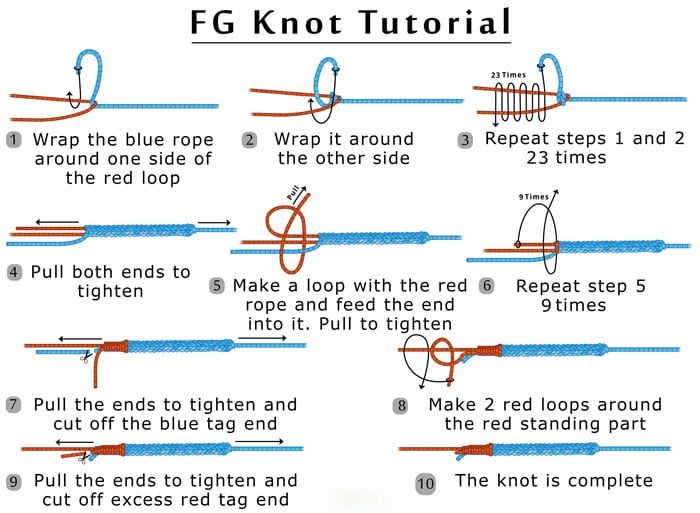
The absolute slimmest and strongest knot for connecting braided main line to heavy fluorocarbon/mono leader. Essential for casting through rod guides.
Essential online resources for fishing regulations, access points, and mapping.
Important notice for all anglers:
The information provided in this application is populated to the best of the developer's abilities and knowledge. However, fishing regulations are subject to change and interpretation.
This page is for reference only.
Every angler MUST consult the official National and Local Fish & Game regulations before heading out. The developer takes no responsibility for any inaccuracies or regulatory breaches resulting from the use of this tool.